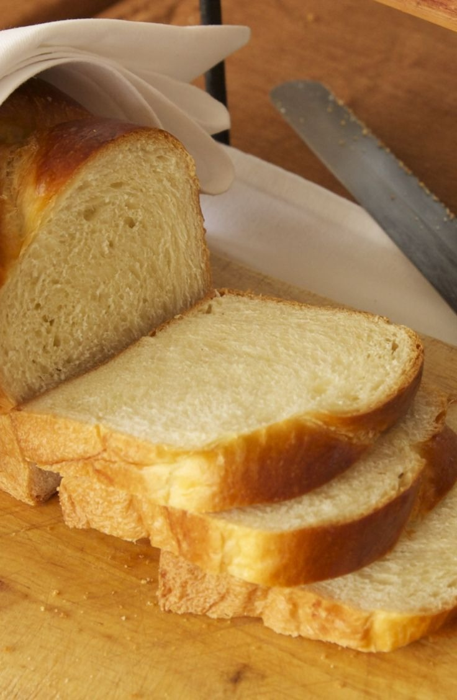

Butter Bread

Description:
After some trepidation, I finally decided to grant the roughly 1,000 food wishes for a grain-free butter bread recipe. And it exceeded my expectations! Without wheat flour and yeast, it won't be true bread. But if you're off carbs, and have been dreaming about a nice slice of buttered toast with your eggs, this is well worth a try. It tastes relatively neutral, with a very subtle egginess and faint almond flavor, and a texture reminiscent of an extra moist and spongy white bread.
Ingredients:
- 6 large eggs
- 1 ½ cups finely ground almond flour
- 2 teaspoons baking powder
- 1 teaspoon fine salt
- ¼ cup melted butter
- ⅛ teaspoon cream of tartar
Steps:
- Separate eggs. Crack each egg into your hand and let the whites run into a bowl. Place yolks in a second bowl.
- Preheat the oven to 375 degrees F (190 degrees C). Butter a loaf pan and line the bottom with parchment paper.
- Place almond flour in a food processor. Add baking powder, salt, and egg yolks. Pour in melted butter. Pulse, scraping down the sides once or twice, until mixture comes together.
- Sprinkle cream of tartar into egg whites. Whisk until soft peaks form. Transfer about 1/3 of the mixture into the food processor. Pulse on and off, scraping mixture down with a spatula as needed, until well blended. Scrape mixture into the bowl with egg whites. Fold together until well combined but still airy. Pour batter into the prepared loaf pan.
- Turn the dough out onto a floured surface and gently flatten into an 8 inch square using the palms of your hands. Cover and let rise again.
- Bake in the preheated oven until golden brown and a toothpick inserted into the center comes out clean, about 30 minutes.
- Run a thin knife along the edge bread and let rest for 10 minutes. Turn bread out onto a wire rack and cool to room temperature before slicing.